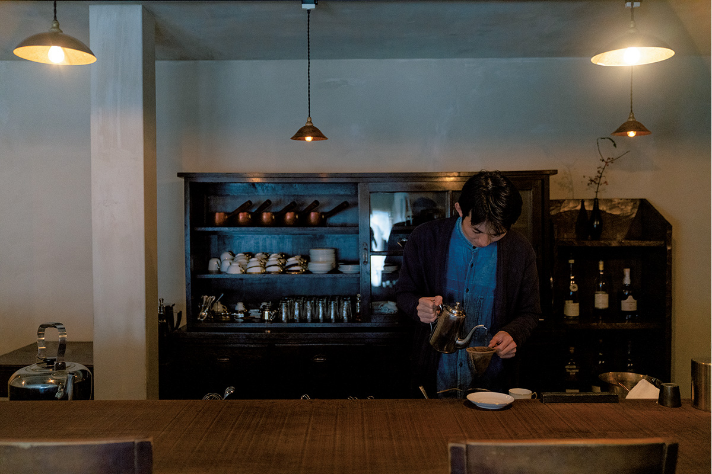
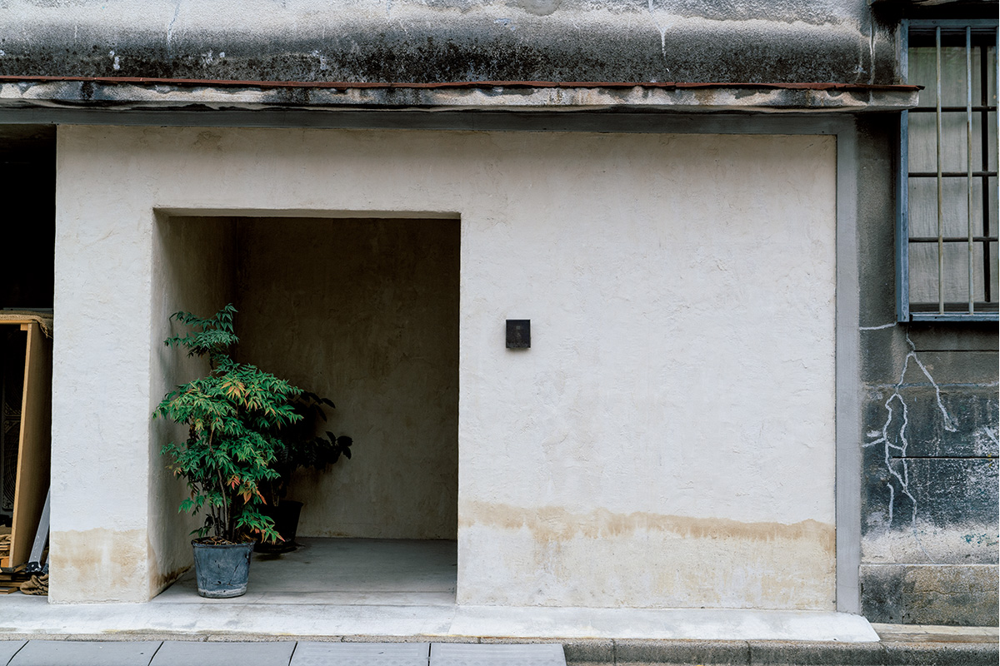
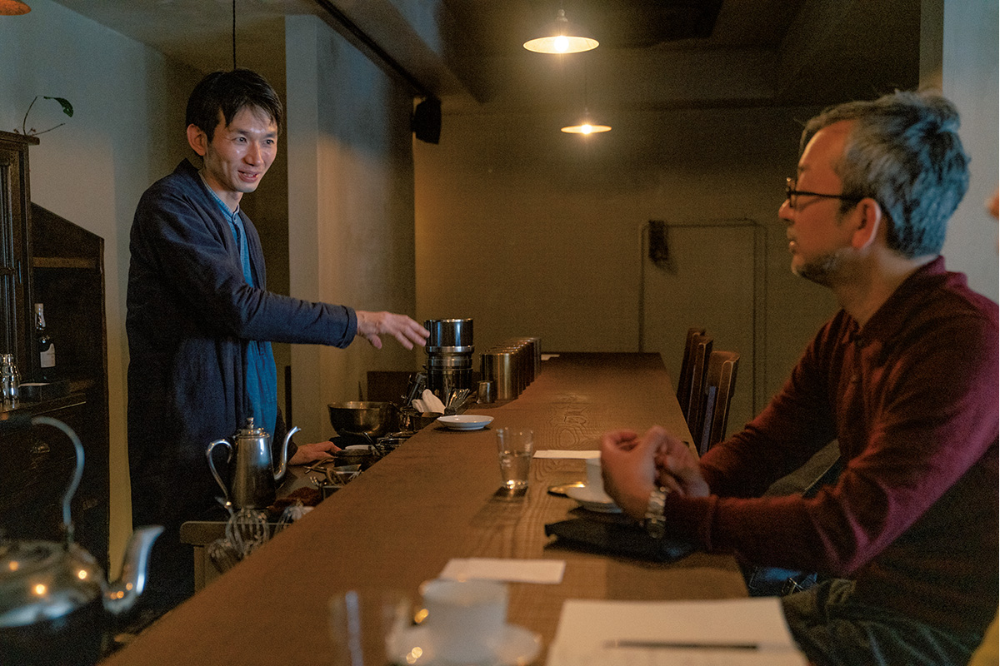

Токио · Курамаэ · кофейня
«Кабуки» в Курамаэ: кофейня, где обжаривают кофе и делают шоколад

В тихом квартале на востоке Токио, среди маленьких контор и мастерских, работает кофейня «Кабуки». Здесь сами обжаривают кофе и делают шоколад, но главное, что предлагают гостям, это хорошее время.
Место
Своё место в городе
У каждого найдётся одна-две любимые кофейни. Кому-то важен вкус кофе, кому-то интерьер и спокойствие, кому-то интересный хозяин. Причины разные, но у любителей кофеен, пожалуй, одно общее чувство: им важно, чтобы кофейня стала для них своим местом.
Хозяин кофейни «Кабуки» и сам не раз находил такое место в кофейнях, и это его выручало. Свою кофейню он ведёт с той же заботой. Она стоит в квартале Мисудзи района Тайто, рядом со станцией Курамаэ, и при ней работают своя обжарочная и шоколадная мастерская. Сюда заглянул директор одного токийского магазина-галереи, большой любитель хороших вещей и хороших лавок.
Вокруг типичный для востока Токио квартал, где перемешаны небольшие офисные здания, лавки, маленькие фабрики и жилые дома. Кофейня тихо вписывается в эту улицу. Вход сдержанный и солидный, и поначалу кто-то может засомневаться, стоит ли заходить. Стоит: за дверью гостей приветливо встречают сотрудники и большой обжарочный аппарат, а потом провожают по лестнице на второй этаж. Там есть ещё одна дверь в сам зал, и она похожа на дверь в другой мир. Так оно и есть.

Хозяин
От Мориоки до Курамаэ
Хозяин кофейни Юсукэ Кабуки учился в университете в Мориоке, на севере Японии, и изучал зоотехнию. Именно там он открыл для себя кофе и кофейни: Мориока известна живой культурой кофеен. Ещё студентом он начал обжаривать кофе, после учёбы работал в компании, которая делает шоколад, а потом ушёл в своё дело и открыл «Кабуки». Время, проведённое в Мориоке, напрямую связано с его кофейней.
«Фланелевый фильтр придаёт кофе лёгкую густоту и пропускает в чашку ароматы, которые есть в маслах зерна»
Юсукэ Кабуки
Зал
Всё на своём месте
Кофейня устроена очень строго и аккуратно. Свет в зале выверен, длинная стойка из цельной доски тянется прямо через весь зал, а вдоль неё стоят тяжёлые, чуть крупноватые стулья. В обстановке, мебели, каждом инструменте и каждой чашке видна забота хозяина. Такой уют не получится, если подбирать вещи только по вкусу.
Тяжёлый стул помогает человеку успокоиться. У чашки должна быть красивая ручка, за которую удобно взяться, и тонкий край. А кофе через фланелевый фильтр требует много труда, но всё-таки получается вкуснее. Продумать роль каждой вещи и всё выстроить исходя из неё: это для хозяина главное.

Вкусный кофе и шоколад, обстановка, обслуживание: всё здесь служит одному. Хозяин старается подарить гостю хорошее время. Когда-то такое время дарили ему самому кофейни, и это главная мысль, на которой держится его дело. Юсукэ Кабуки можно назвать мастером времени.
«Кабуки»
- Адрес
- Токио, Тайто, Мисудзи, 1-12-12
- Телефон
- +81 3-5809-3918
- Часы работы
- 11:00–20:00
- Выходные
- вторник (если праздник, открыто)
- Сайт
- kabukiyusuke.com
Фото: Ацуси Ямахира.